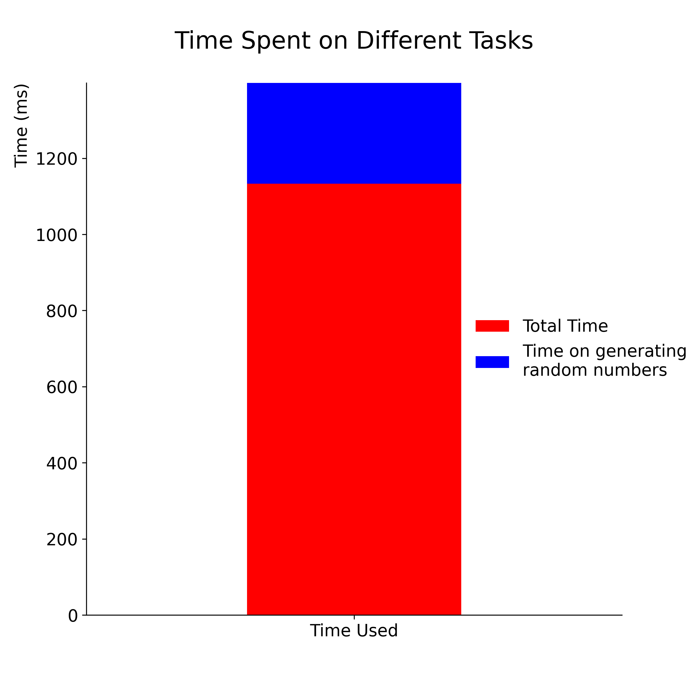
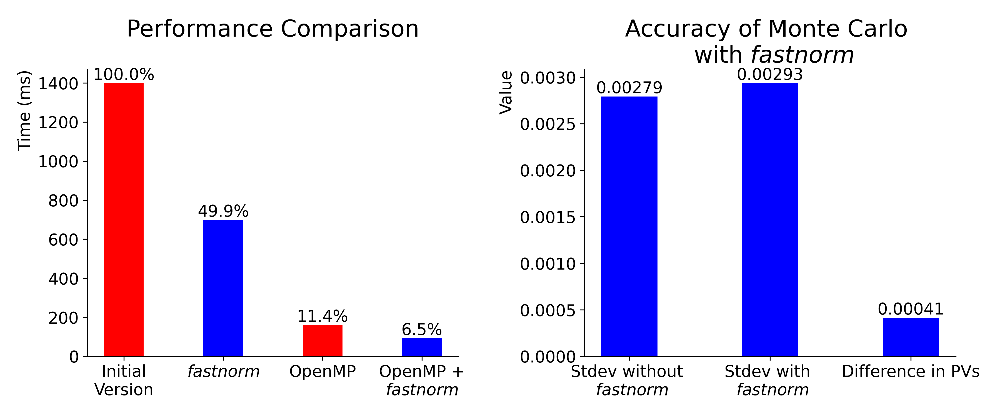

随机数采样的fastnorm算法及其在蒙特卡洛定价上的应用¶
参见附录，以了解本节使用的测试方法
优化蒙特卡洛算法的性能¶
下图比较了使用蒙特卡洛模拟为某衍生品定价时，总时间和随机数生成时间。

可以看到，运行一次蒙特卡洛模拟所需时间为1398毫秒，其中超过1100毫秒用在了生成随机数上。因此，除了使用并行计算之外，如果能够成倍地减少随机数生成所花时间，那么蒙特卡洛算法的性能能得到非常大的提升。
使用 fastnorm 提高随机数生成速度¶
基本原理¶
若\(\varepsilon_1, \varepsilon_2, \varepsilon_3, \varepsilon_4\)是4个独立的标准正态变量，那么可由以下方式获得的另外4个随机变量：
\((1)\)
右边矩阵的行向量是规范正交的，因此 \(\varepsilon_5, \varepsilon_6, \varepsilon_7, \varepsilon_8\) 也是4个独立的标准正态变量。另外，\(-\varepsilon_j\;(j=1,...,8)\)也是8个标准正态变量。期望的线性保证了这种方法的可行性。
和直接生成随机数相比，矩阵乘法用时要短很多，这是fastnorm能够显著提升蒙特卡洛算法速度的原因。
实现方式¶
首先，根据待定价产品的结构，生成4条蒙特卡洛模拟所的随机数序列，称为eps1, eps2, eps3, eps4。对每个指标t，对eps1[t], eps2[t], eps3[t], eps4[t]应用\((1)\)式，得到eps5[t], eps6[t], eps7[t], eps8[t]。对这8条随机数序列取相反数，就可再得到8条随机数序列。
因此在每次循环中，产生了16条随机数序列。其中4条序列使用伪随机数生成器产生，而另外12条则是由线性变换得到。循环次数为模拟次数 \(\div\) 16。
伪代码如下，其中A是 \((1)\) 中的矩阵。
initialize eps1, eps2, ..., eps16
for t = 0, 1, ..., 243:
generate pseudo random numbers e1, e2, e3, e4
e5, e6, e7, e8 = matrix_mul(A, [e1, e2, e3, e4])
eps1[t], ..., eps8[t] = e1, ..., e8
eps9[t], ..., eps16[t] = -e1, ..., -e8
end for
比较不同方法的性能¶
下图展示了不同版本蒙特卡洛算法的效率。右图比较了普通算法了fastnorm的算法定价的标准差，以及结果的差异。

左图比较了不同算法对同一产品定价所需的时间。在测试机器（见附录）上使用并行计算可以时间缩短至不到原来的1/8，在此基础上使用fastnorm快速生成随机数可以将时间进一步缩短约45%。
右图比较了不同算法的精度。使用fastnorm算法会少量增加运算结果的标准差，这是因为使用\((1)\)式及相反数产生的随机数和原本的4个随机数不是独立的。两种算法给出的结果之差远小于普通算法的标准差，这表明fastnorm造成的随机数的相关性对定价结果产生的影响是相对小的。
附录¶
测试参数¶
结构：向上敲出看涨期权，行权价格100，障碍价格120，期限244交易日，每日观察敲出；
BS模型参数：无风险利率2%，股息率1%，波动率25%；
每次模拟产生的路径总数：100万条。
测试方法¶
时间：所有时间均通过统计100次模拟的时间并取均值得到；
随机数生成时间：只产生所需随机数，而不进行其他任何计算所需的时间；
模拟的均值和标准差：统计100次模拟返回的结果，取均值和标准差。
测试机器参数¶
操作系统: Ubuntu 22.04.1 LTS, 64-bit
处理器: 12th Gen Intel(R) Core i7-12700
内存: 16 GB 3200 MHz DDR4
图形处理器: Mesa Intel(R) Graphics (ADL-S GT1)
参考文献¶
[1] Brent, Richard P. “Some comments on CS Wallace’s random number generators.” The Computer Journal 51, no. 5 (2008): 579-584.